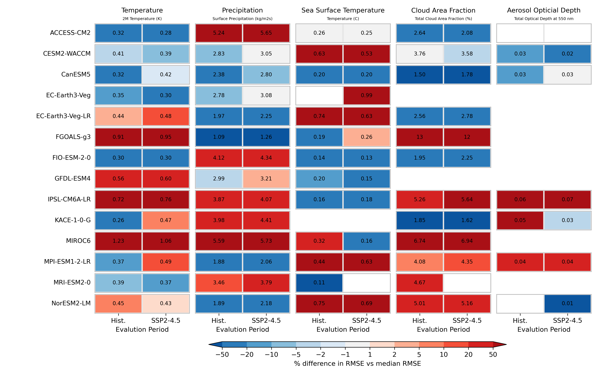

Overview
ClimateBench is a benchmark dataset for climate model emulation inspired by WeatherBench. The following results were calculated using a three member ensemble (r1i1p1f1, r2i1p1f1, r3i1p1f1) of the historical and SSP2-4.5 simulations from CMIP6 models. The model data was benchmarked against observational datasets to test how accurate their predicitons were of the last ten years.
